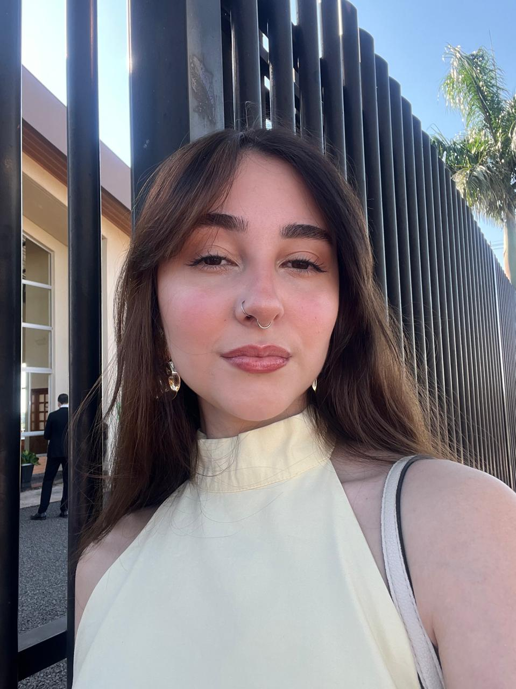

Pietra Demiciano
Estudante de Eng. de Software e Futura Gerente de Projetos
Tenho uma base técnica sólida em TI, mas minha verdadeira paixão é a organização, a liderança e gestão. Meu foco não é codar o dia todo, mas sim liderar equipes, gerenciar entregas e garantir o sucesso de projetos.
Meu lado artístico me ajuda a enxergar soluções criativas no trabalho. No gerenciamento de projetos, a criatividade é fundamental para resolver conflitos e desenhar fluxos de trabalho eficientes.

Minhas Habilidades
Procuro equilibrar conhecimento técnico e habilidades de comunicação para liderar equipes de forma eficiente.
Hard Skills
- HTML5, CSS3 e JavaScript
- Gestão Ágil (Scrum, Kanban)
- Engenharia de Requisitos
- Documentação Técnica
Soft Skills
- Comunicação Assertiva
- Liderança e Empatia
- Resolução de Conflitos
- Visão Estratégica